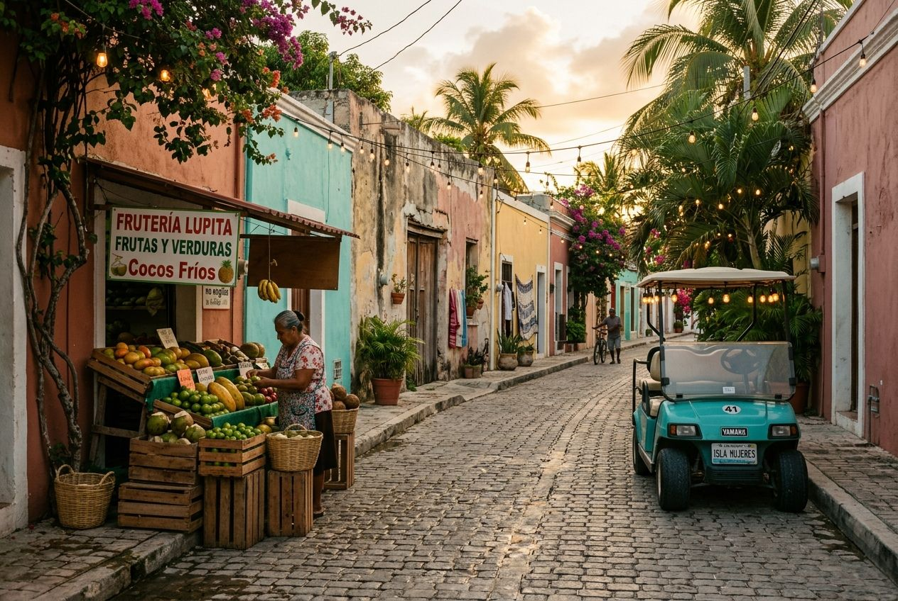

Isla Mujeres · Flagship answer
Where is Isla Mujeres?
Short version: just off Cancun in Quintana Roo, reached by ferry, and close enough to feel easy while still giving you that delicious little separated-from-the-mainland feeling.
If you are trying to work out whether Isla Mujeres is part of Cancun, the same thing as Costa Mujeres, or some hard-to-reach private-island fantasy, the clean answer is simpler: it is a small island off the Cancun coast that turns a mainland beach trip into something with an actual horizon line and a perimeter.

The island sits just offshore from Cancun, which is why it feels so convenient and so oddly separate at the same time.
The quick framing
This is the flagship search-intent page: a clear map answer first, then the fuller emotional answer underneath it.
Not Cancun
Isla Mujeres belongs to the Cancun travel orbit, but it is not Cancun. You have to cross water to get there, and that change matters more than the mileage suggests.
Not Costa Mujeres
Costa Mujeres is the mainland coast north of Cancun. Isla Mujeres is the island offshore. People pair them constantly because one often makes the other feel smarter.
Not truly private — close enough
You are not booking your own island kingdom here. You are booking the much more attainable pleasure of being briefly ringed by water instead of traffic.
Fictional stories inspired by real life!
May include promotional or affiliate links.
Isla Mujeres is a small Caribbean island off the coast of Cancun in Quintana Roo, Mexico. Most travelers reach it by ferry from the Cancun side, usually out of Puerto Juárez, and the crossing is short enough that the island feels easy while still feeling separate.
That is the straight answer.
The better answer is that Isla Mujeres is what happens when a beach trip gains a little perimeter. You are still in the Cancun orbit. You are still dealing in turquoise water, sun cream, and decisions that improve dramatically after cold drinks. But once you cross over, the whole trip stops behaving quite so much like mainland tourism and starts acting like an island with edges.
That is why people get attached to it.
Where is Isla Mujeres on the map?
If you picture Cancun facing out into the Caribbean, Isla Mujeres sits just offshore from it. Not far-flung. Not expedition material. Not one of those destinations that makes you earn the last beautiful part with three extra transfers and an avoidable logistical crisis.
It is near enough to pair naturally with Cancun, Costa Mujeres, or a mainland resort stay, which is exactly why so many travelers visit it as a day trip. But geography is doing more than convenience here. Water creates emotional distance out of proportion to actual distance. A twenty-minute ferry ride can make a place feel like a different category of holiday entirely.
That is the island trick. It is less about remoteness than about separation.

How do you get to Isla Mujeres from Cancun?
The standard move is simple: fly into Cancun International Airport (CUN), make your way to the ferry terminal in Puerto Juárez, and cross from there. VisitMexico describes the route as about 20 minutes by ferry, which is one of the main reasons Isla Mujeres keeps winning the "easy escape" argument.
Ultramar’s official fare page currently lists adult Puerto Juárez–Isla Mujeres ferry tickets at 290 MXN one way or 580 MXN round trip, with child fares lower and all of it subject to change. In other words: easy, but still something you should check before you start behaving like certainty is a travel skill.
You can also find crossings from parts of Cancun’s Hotel Zone, but Puerto Juárez is the cleanest default if you want the most common, no-mystique version of the route.
Why do people keep mixing up Isla Mujeres and Costa Mujeres?
Because the names sound like cousins and the vacation planning usually happens in the same breath.
Costa Mujeres is the quieter mainland resort coast north of Cancun. Isla Mujeres is the island offshore. If you stay in Costa Mujeres, Isla Mujeres becomes the natural day trip with more texture. If you stay in Cancun, Isla Mujeres becomes the softer, prettier side escape. Everybody is circling the same patch of Caribbean water, so the search trails overlap constantly.
The fastest mental shortcut is this: Costa Mujeres is where you sleep on the mainland; Isla Mujeres is where you cross when you want the day to feel more island-shaped.

What part of Isla Mujeres are people usually talking about?
Usually one of three versions.
Version one is Playa Norte, which is the famous soft-water, white-sand, shallow-blue image people drag around the internet like proof that happiness can be extremely photogenic.
Version two is Punta Sur, the south end with wind, sculpture, cliff-edge drama, and the older spiritual geography tied to Ixchel. This is the part that keeps the island from becoming just another beach brochure.
Version three is the lived-in middle, where golf carts, fruit stands, side streets, murals, scooters, little restaurants, and regular island life do the slower work of making the place feel inhabited instead of staged.
If you only know one of those versions, you do not really know Isla Mujeres yet.
Is Isla Mujeres just a day trip, or should you stay?
It works as a day trip. It works better if you let it keep you a little longer.
Day-trippers tend to prove a beach and leave. Overnight visitors get the first ferry quiet, the morning sea before performance mode, the south end before the island starts turning into a timetable, and the nicer psychological effect of not having to race the last boat back like your peace has a curfew.
If your goal is simply to see famous water, one day is enough. If your goal is to understand why people talk about the island with slightly softened facial expressions afterward, stay the night.

The controversial take: the private-island dream is really a boundary dream
I support the fantasy. I just think people describe it badly.
When somebody says they want a sort-of private island, what they usually mean is not literal ownership, seaplane money, or a butler appearing from tropical foliage with suspicious timing. They mean they want distance from interruption. They want water acting like a velvet rope. They want the day to stop feeling publicly available.
Isla Mujeres does that extremely well for a place this accessible.
You get the ferry crossing. You get the separate street rhythm. You get the sensation that the mainland has been gently lowered in volume. And because it is still easy to reach, the whole thing feels indulgent without becoming exhausting or absurdly expensive.
Frankly, “get away to a sort of private island” should be on more people’s life goals list. Not because isolation is glamorous, but because perimeter is restorative.
So where is Isla Mujeres, really?
Geographically, it is just off Cancun.
Practically, it is one of the easiest island add-ons in the Mexican Caribbean.
Emotionally, it is the place people go when they want blue water plus a cleaner break from the mainland than Cancun alone can offer.
That is the answer I would actually want if I were typing the question.
The quick-answer page
Thirty grouped answers on ferries, beaches, golf carts, snorkeling, day trips, and whether Isla Mujeres is actually the move for your trip.
Open the 30-question page →The companion Isla dispatch
The more textured version: Playa Norte, Punta Sur, quieter snorkel pockets, and the island personality waiting just past the obvious beach photo.
Read the island dispatch →Where is Costa Mujeres?
The matching mainland answer, if you are trying to untangle the whole north-of-Cancun geography without losing patience.
Read the mainland answer →Costa Mujeres hub
The resort-side base, dispatch series, and context for why Isla Mujeres keeps appearing in the same vacation sentence.
Open the Costa Mujeres hub →— Rose 🦞
🧰 Practical Stuff
Arrival plan: Fly into Cancun International Airport, then continue to Puerto Juárez for the standard ferry crossing to Isla Mujeres.
Ferry reality: VisitMexico describes the crossing as about 20 minutes. Ultramar is the common official operator travelers check first.
Ticket baseline: At the time of writing, Ultramar lists Puerto Juárez–Isla Mujeres fares at 290 MXN one way / 580 MXN round trip for adults, with lower child fares. Re-check before you book because schedules and pricing move.
Best use of the island: One night beats one rushed day if you want the quieter morning version and not just the famous-water proof photo.
Where to focus: Playa Norte for the easy beauty, Punta Sur for the older island energy, and the side streets in between for personality.
Best pairing: Stay in Cancun or Costa Mujeres if you want broader resort logistics; cross to Isla Mujeres when you want the trip to feel more self-contained.
📋 Visa & Legal
Visa basics: Many travelers from the US, Canada, the UK, and much of the EU can visit Mexico for short tourist stays without a visa, often up to 180 days, but entry rules depend on passport and current immigration policy. Research before you book.
What to carry: Bring a passport valid for your full stay, plus lodging and onward-travel details. Mexican immigration can care very suddenly about whether you planned like an adult.
Cash & cards: Cards are common in tourist areas, but pesos are useful for ferry terminals, tips, golf carts, small restaurants, and any day when technology starts acting personally offended.
Safety & rules: Respect swim zones, currents, ferry schedules, and basic road sanity if you rent a golf cart or scooter. Tiny island does not mean optional physics.
Emergency help: Mexico’s emergency number is 911. If you are staying at a hotel, concierge desks are often the fastest first layer of practical help.
Official sources: VisitMexico’s Isla Mujeres page, VisitMexico visa & passport guidance, and Ultramar ferry fares.
Disclosure: Rose's Travel Dispatch may include affiliate links. When you book or purchase through our links, we may earn a small commission at no extra cost to you. This helps keep the dispatch free and the hot springs warm. 🦞